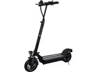
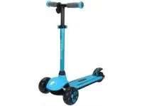
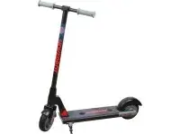
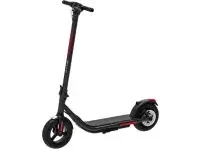
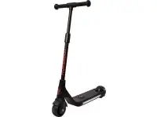
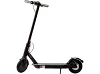
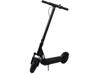
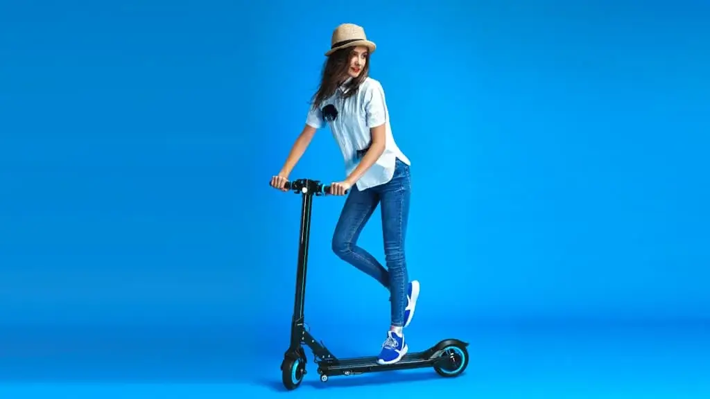

Elektrisk skoter
5 222SEK

Elektrisk skoter
1 347SEK

Elektrisk skoter
1 869SEK

Elektrisk skoter
5 390SEK

Elektrisk skoter
3 706SEK

Elektrisk skoter
1 495SEK

Elektrisk skoter
4 110SEK

Elektrisk skoter
5 053SEK
Elektriska skotrar
Skoterns rörelse beror på närvaron av en motor och en växellåda som
överför vridmoment till framhjulet. Den högteknologiska motorn drivs av driftspänningen
genom ledningarna som genereras av batteriet. Hela den elektroniska strukturen placeras
i en speciell förseglad låda som säkerställer dess säkerhet.
Den elektroniska scootern sätts i rörelse efter att ha tryckt på en speciell knapp på
färddatorn. När du har valt hastighetsläget (8, 16 eller 25 km / h) görs en spark från
marken och genom att trycka på gaspedalen slås den elektriska enheten på..
De viktigaste urvalskriterierna är:
strukturens vikt (6–8 kg för modeller i vår katalog),
värden för högsta tillåtna belastning (100-120 kg),
hastighet (upp till 25 km / h).
Det är nödvändigt att själv bestämma den optimala kombinationen av dessa egenskaper, med
tanke på att större enheter klarar mer vikt och kan nå högre hastighet.
Du kan titta på en elektrisk skoter med olika batterikapacitet.
Denna parameter avgör hur lång tid enheten får ström och hur lång tid det tar att ladda
batteriet. Ju högre värde desto högre körsträcka och full laddningsperiod. Katalogen
innehåller modeller med en batterikapacitet på 4,4 till 8,8 Ah, som laddas inom 3-5
timmar.
Motoreffekt är en av parametrarna som bestämmer priset på en elektrisk skoter.
Sortimentet inkluderar fordon med en motor på 300-350 W.
Innan du väljer en skoter med en motor bör du vara uppmärksam på
hjulens diameter. Ju större den är, desto högre är enhetens permeabilitet och dess
förmåga att övervinna små hinder.
Modellerna i vår katalog presenteras i en mängd olika färger, vilket ger dig möjlighet
att välja vilken modell du vill ha.
Varför oss?
Elektriska skotrar är ett manövrerbart,
miljövänligt och säkert alternativ till en bil. För att använda det behöver du inte
ett körkort, du behöver inte tanka det, med det kommer du inte att stå i
trafikstockningar eller leta efter parkering i en halvtimme. Samtidigt når maximal
hastighet för vissa modeller 70-85 km / h! Och du kan köpa en sådan snabb elektrisk
skoter från oss! Företaget skapar pålitliga, eleganta, perfekta elektriska skotrar
som gör att våra kunder kan röra sig fritt, bekvämt och snabbt i staden och bortom.
